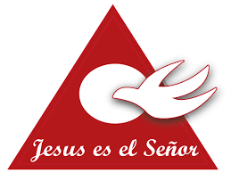

Renovación Carismática.
- 
Mensaje del Padre Javier desde la Pastoral de la Renovación Carismática Argentina - 08/06/2020.
Mensaje del Padre Javier desde la Pastoral de la Renovación Carismática Argentina - 10/06/2020.
Objetivos Generales de la R.C.C.
Podemos resumirlo en cinco Objetivos:
1- Alcanzar una conversión personal, madura y continua hacia Jesucristo nuestro Señor y Salvador.
2- Lograr una receptividad personal y decisiva hacia la persona, la presencia y poder del Espíritu Santo.
3- Disponernos para la recepción y utilización de dones Espirituales. (Carísmas)
4- Fomentar la labor evangelizadora en el poder del Espíritu Santo.
5- Promover el crecimiento progresivo en santidad.
Algunos elementos que caracterizan la R.C.C:
- Conocimiento de la experiencia de Dios como "Experiencia".
- Oración Comunitaria.
- Una verdadera espiritualidad.
- Sentido de comunidad Cristiana (COMPROMISO PASTORAL)